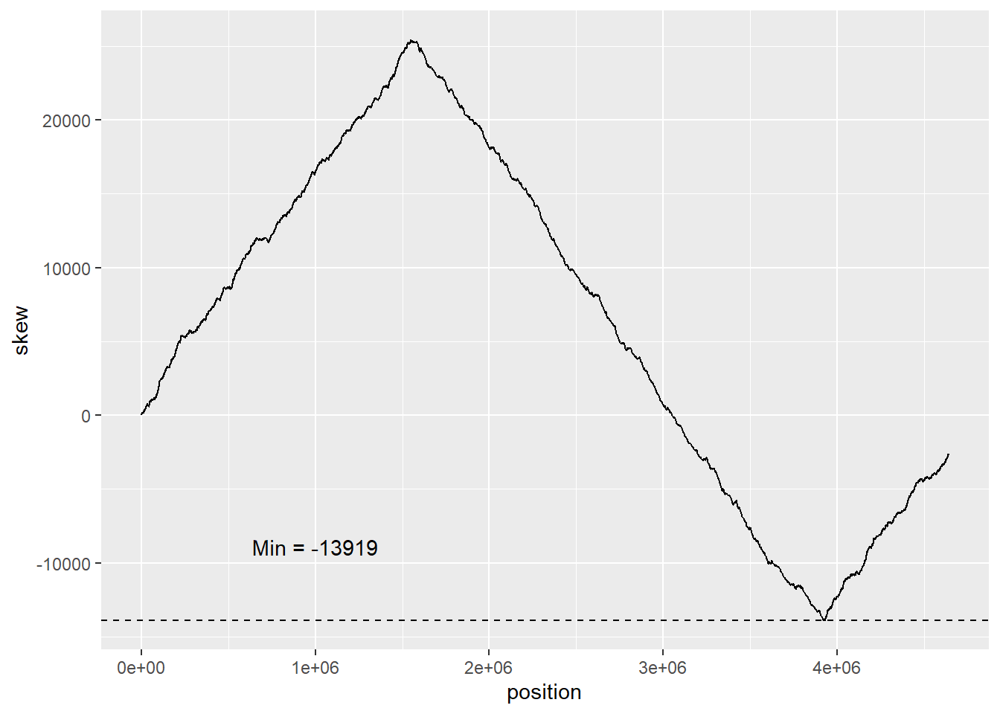

Chapter 1 – From Statistical Analysis to Bioinformatics
Introduction: Sampling, Processing, and Analyzing Genomic data
The goal of this notebook is to complete a series of challenges that will lay the foundation for using RStudio to analyze genomic data. By learning how to effectively store objects in variables, build functions to analyze genetic data, and implement “for” loops when necessary, we aim to enhance our ability to analyze and interpret genomic data more efficiently. Through analyzing genomic data with the tools and concepts covered in the course, we will gain a deeper understanding of genetic information and its crucial role in biological processes. Ultimately, our aim is to leave this course with a well-documented online environment that showcases our accomplishments in analyzing genomic data
Objectives:
Use the arrow (<-) operator to store objects in variables.
Build functions to process and analyze genetic data.
Create a list of nucleotides
Use set.seed() to set a seed for a random number generator to make your results reproducible over time and across different machines (and different researchers too).
Use R’s sample() function to create a random “genome” for the purpose of testing functions.
Use paste() with the parameter setting collapse = “” to collapse your random genome into a single long string of nucleotides.
Learn about for loops and implement them when necessary.
Read in a real bacterial genome from a text file.
Use programmatic flow control in the form of if/else if/else statements to run code only when a particular condition is satisfied.
Solve a bioinformatics problem on the Rosalind platform.
1.1 Generating a New Variable Containing each Nucleotide
Vectors are a one-dimensional array of values of the same data type.
vector <- c(1, 2, 3, 4) , vector <- 1:4 are methods of generating a vector array.
This code can be accessed by positional metrics, where position is a numerical value. For example, vector[3] will return the value 3 (considering the examples above), or whatever value is located in the third position.
Code
# create a new variable containing a vector of four characters for the four nucleotide abbreviations (Adenine, Cytosine, Guanine, Thymine) ## Vector is a one-dimensional array-like object that can contain values of the same basic type of data (numerical,character,logical)nt_names <-c("A", "T", "G", "C")nt_names # simply displays the vectors without organizing
[1] "A" "T" "G" "C"
1.2 Generating a Randomized String of 15 Nucleotides variables
Using the vector array created in the previous
set.seed is used to generate a reproducible algorithm for repeating the
Code
set.seed(215)# `sample` function used to generate a random sample of nucleotides from the nucleotides (nt_name) vector. The `size` argument specifies the number of samples to generate (15) ##`replace = TRUE` indicates sample should be replaced in the pool after being selected (same nucleotide can appear multiple times in the sample)## nt_sample calls on vector generated in challenge 1 and stored in the environmentrnd_genome <-sample(nt_names, size =15, replace =TRUE)paste(rnd_genome, collapse ="")
[1] "CGGAACTCCCAACGC"
1.3 Expanding Randomized String to 1500 Nucleotides
Code
# create a new variable containing a vector of four characters for the four nucleotide abbreviations (Adenine, Cytosine, Guanine, Thymine) ## Vector is a one-dimensional array-like object that can contain values of the same basic type of data (numerical,character,logical)nt_names <-c("A", "T", "G", "C")# generate a new value representing the number of nucleotides that will be randomly generated for this dataset##This step is not required (numerical value can be used in 'sample') but it is better to call on a value then hard code one into a function. More flexible when df is largernt_num <-1500# for reproducibility, using the same seed each time means the "randomness" can be recreated.set.seed(215)#'sample' function randomly picks variables from nt_names vector to generate a new vector n length, in this case n = nt_num (1500)nt_sample <-sample(nt_names, size = nt_num, replace =TRUE)# 'paste' combines the individual nucleotides into a single string rather then a list of individual letters# 'collapse' removes the seperator generated between each nucleotide as a result of the 'sample' function interavting with the nucleotides.paste(nt_sample, collapse ="")
1.4 Counting each DNA Nucleotide in a Randomized Dataset and using Loop()
Generating a 100-nucleotide strand and counting each frequency
Code
# Set a seed value to ensure that the random numbers generated are reproducibleset.seed(215)# Generate a random genome sequence of length 100 by sampling (with replacement) from the nucleotide abbreviation vector still in the environmentrnd_genome <-sample(nt_names, size =100, replace =TRUE)# 'table' function counts the frequency of each vector (nucleotide) in the random genome sequence and generates a table of the results table(rnd_genome)
rnd_genome
A C G T
23 23 25 29
Using Loop() function to repeat an operation
for loop functions are widely used and incredibly versatile for repeating an operation with minimal inputs.
Code
# Create 'loop_result' variable used to store the values being added in each iteration of the loop.## loop is initialized to 0 (or whatever value entered for 'loop_result') and then incremented by the current value of i (and the function applied to the loop) in each iteration of the looploop_result <-0# for loop is a control flow statement in programming that allows you to execute a block of code repeatedly.## The loop consists of an initialization statement, a test condition, an update statement, and a loop body. In this code## Here, a loop is used to iterate over a sequence of values from 1 to 10, adding the value 'i' for each iteration.for(i in1:10){ loop_result <- loop_result + iprint(loop_result)}
#initialize a new dataframe with a value of 1myProduct <-1# Use "for loop" to iterate (multiply) myProduct by values of j(1-15)##kind of confusing, but the iteration variable "j" for(j in1:15) { myProduct <- myProduct * j # Update myProduct by multiplying with jprint(myProduct) # Print the updated value of myProduct}
Counting Adenine using loop() function with If/else statements
Code
# "For loop" is used to perform iterations 1:n where n (nchar) refers to the number of characters (variables, nucleotides) in the rnd_genome datasetfor(i in1:nchar(rnd_genome)) {print(str_sub(rnd_genome, start = i, end = i)) }
[1] "T"
[1] "G"
[1] "G"
[1] "A"
[1] "A"
[1] "T"
[1] "C"
[1] "T"
[1] "T"
[1] "T"
1.7: Modifying Output to sum the For Loop() Results Output
Code
# Set a variable called `sum_A` equal to 0sum_A <-0# Use a for loop to iterate over each character in the `rnd_genome` variablefor (i in1:nchar(rnd_genome)) {# # String subset is checked for each iteration, start = i and end = i means this substring will only extract a single character, i, for each iteration## == "A" checks each substring, and only extracts A for each nucleotide in the datafromif (str_sub(rnd_genome, start = i, end = i) =="A") {# If it is, add 1 to the `sum_A` variable sum_A <- sum_A +1 }}# Create a named vector called `result` with one element, the number of adenine bases foundresult <-c("Adenine:"= sum_A)# Use the `print` function to output the `result` vector to the consoleprint(result)
Adenine:
2
Code
sum_A <-0# Create a new variable to store sum of "A" characters extracted from the loopfor(i in1:nchar(rnd_genome)) {if(str_sub(rnd_genome, start = i, end = i) =="A") { sum_A <- sum_A +1# Adds 1 to sum_A variable when a iterations passes the if "A" statement }}cat("Total number of Adenisine Nucleotides: ", sum_A) # Print the final value of sum_A using cat() "concatenate and print" function to merge the output of sum_A
Total number of Adenisine Nucleotides: 2
Code
## Without cat(), print() produces two lines
1.8: Adding the remaining nucleotides to the count
Code
# Initialize count variables for each nucleotide to 0sum_A <-0sum_C <-0sum_G <-0sum_T <-0# Loop through each character in the random genome sequencefor(i in1:nchar(rnd_genome)) {# Check if the character is "A", "C", "G", or "T", and increment the corresponding count variable if it is##'str_sub' substring function allows each vector in the variable to be checked and summed independent of the other vectors in the string##'start = i' and 'end = i' is starting at position i and ending at position i for each iteration extracting the "i-th" character of the string, which is then compared to the nucleotide letters A, C, G, and T and added to the count.if(str_sub(rnd_genome, start = i, end = i) =="A") { sum_A <- sum_A +1}if(str_sub(rnd_genome, start = i, end = i) =="C") { sum_C <- sum_C +1}if(str_sub(rnd_genome, start = i, end = i) =="G") { sum_G <- sum_G +1}if(str_sub(rnd_genome, start = i, end = i) =="T") { sum_T <- sum_T +1}}# Create a named vector of the counts for each nucleotideresult <-c("Adenine:"= sum_A, "Cytosine:"= sum_C, "Guanine:"= sum_G, "Thymine:"= sum_T)# Print the resultsprint(result)
Adenine: Cytosine: Guanine: Thymine:
2 1 2 5
Understanding the biology – DNA Replication Lecture
sum_A <-0sum_C <-0sum_G <-0sum_T <-0for(i in1:nchar(rosalind_string)) {if(str_sub(rosalind_string, start = i, end = i) =="A") {sum_A <- sum_A +1}elseif(str_sub(rosalind_string, start = i, end = i) =="C") {sum_C <- sum_C +1}elseif(str_sub(rosalind_string, start = i, end = i) =="G") {sum_G <- sum_G +1}elseif(str_sub(rosalind_string, start = i, end = i) =="T") {sum_T <- sum_T +1}}paste(sum_A,sum_C,sum_G,sum_T)
[1] "20 12 17 21"
This result matches the key provided on the website, so I assume that this code is effective!
Chapter 2: Bioinformatic Tools pt. 2
Introduction: Improving Tools and Efficiency
Genomes are large, and it is important that the tools for analyzing them are used properly to both validate that the results are accurate, and that as few unnecessary steps as possible are made since they will be time consuming when working with a large string of nucleotides.
Objectives:
Learn to eliminate “single-use code” by encapsulating code in functions which can be easily applied to different genomes.
Expand your ability to count the frequency of each individual nucleotide within a genome to an ability to count the appearance of patterns in the genome.
Build and execute functions to find “hidden messages” within the genome by identifying patterns appearing much more often than they would be expected to if a genome included nucleotides at random.
Exploit transcription errors to narrow a search region for the replication origin.
2.0: Generating Functions for Functions
Code
# Functions allow code to be ran without having to enter or copy and paste the code into a new block## within function(), the variables that can be altered are added (and pop up when entering in the function)## nucleotide = "A" means IF no nucleotide is supplied when using the function, it defaults to "A"nucleotide_frequency <-function(genomeString, nucleotide ="A"){ count <-0# generate a new variable for the function to write to## for each iteration of i from 1 to the end of 'genomestring', if character in the string is the specificied nucleotide, count is updated by +1## {} are layers to the formula, which are only run in each iteration if the previous step is satisfied.for(i in1:nchar(genomeString)){if(str_sub(genomeString, start = i, end = i) == nucleotide){ count <- count +1 } }return(count)}nucleotide_frequency("ACTTGCGGGTATCGAG", "G")
[1] 6
2.1: Using the Function Function on a Randomized Genome
str_sub or substrings, allow the function to extract characters based on a starting and and ending point, which can be valuable for extracting vectors of a specific length, or with specific values. This function will be valuable for genomic data to identify patterns and extract vectors with specific lengths.
Code
string_sample <-c()# subset strings extract a value based on the string_sample <- string_sample %>%append(str_sub(nt_sample, start =1000, end =1005))# Negative vector position indicated the position to start and end from is being measured starting at the end of the dataset# When data from variables is added to a substring, they are removed and cannot be added to a new substring that overlaps itstr_sub(nt_sample, start =-1000, end =-995)
[1] "TTAATA"
Appending a new list containing a substring of nucleotides
Code
# 'append' is useful for generating a reusable variable containing a vector that can be called back for later testsstring_sample <-c()# subset strings exctract a value based on the string_sample <- string_sample %>%append(str_sub(nt_sample, start =1000, end =1005))string_sample
[1] "CTTAAT"
Using multiple-vector substrings to generate paired nucleotides in a dataset
Code
generate_2_mer <-function(string_sample) { list_codon <-c()# this function will run from 1 to the end of the supplied genome sting (-1 prevents the function from adding a variable that does not contain 2 variables)for(i in1:(nchar(string_sample) -1)){ list_codon <- list_codon %>%append(str_sub(string_sample, start = i, end = i +1)) }return(list_codon)}generate_2_mer(string_sample)
[1] "CT" "TT" "TA" "AA" "AT"
2.3 Using multiple-vector substrings to generate codons in a dataset
Code
generate_codons <-function(string_sample){ list_codon <-c()# for each iteration i in the sequance 1 through all charictars in the provided string ## -2 to prevent a partial codon## by = 3 to make the function shift 3 rather then shifting 1 and counting 3 for each iterationfor (i inseq(1, nchar(string_sample) -2, by =3)) { list_codon <- list_codon %>%##append adds an additional vector to the variable, without clearing what was generated previously. end = i + 2 means the function will count 3 out from the current variable being iterated, which jumps 3 each iteration. append(str_sub(string_sample, start = i, end = i +2)) }return(list_codon)}generate_codons(rnd_genome(200))
generate_k_mer <-function(string, k =3) { list_codon <-c()for (i inseq(1, nchar(string) - k +1, by = k)) { list_codon <- list_codon %>%append(str_sub(string, start = i, end = i + k -1)) }return(list_codon)}generate_k_mer(rnd_genome(9))
[1] "TGG" "AAT" "CTT"
This function can
2.4 Using functions to generate genome, extract strings of length k, and find the frequency of nucleotides
putting together everything completed in this chapter, the written code can now perform genomic analysis with pre-written functions that are proven to function as intended, and can be utilized for any genome.
2.5 Generating a function to find the frequency of a specific nucleotide string
Code
nt_pattern <-function(string, pattern) { nt_matches <-0 len_string <-nchar(string) len_pattern <-str_length(pattern)for (i in1:(len_string - len_pattern +1)){if (str_sub(string, i, i + len_pattern -1) == pattern){ nt_matches = nt_matches +1 } }return(nt_matches)}nt_pattern(rnd_genome(2000), "GACCTT")
The code suggests this pattern appeared 25 times, which was the correct answer, meaning the function worked as intended!
Chapter 3: Bioinformatic Tools pt. 3
Using Functions to analyze patterns in a genome sequence
The previous steps have been building the tools to start making more complex functions capable of inputting a genome and looking for repeating code, in specific places.
3.1 Combining generate_k_mer and nt_pattern to build a function generate_frequent_k_mer
This step will require putting together the concepts building up to and including generating strings of a specific length, and recognizing patterns of a specific length
The goal of this step is to generate a function that will take a genome string and find repeats of a function that are a specific length k, outputting a list using the unique() function to remove repeats
Code
generate_frequent_k_mer <-function(genome, k=9) {# generate all k-mers from the genome by the length k using `generate_k_mer` function previously created strings <-generate_k_mer(genome, k)# Run strings through the unique function to generate a set where each unique string length `k` is not repeated. This allows us to compile a string strings <-unique(strings)# count the frequency of each k-mer using the `nt_patterns` function previously created k_mer_count <-rep(0,length(strings))for (i in1:length(strings)) {for (j in1:nchar(genome)-(k+1)) {if (strings[i]==str_sub(genome,j,j+(k-1))){ k_mer_count[i]<-k_mer_count[i] +1 } } }# order the k-mers by frequency and return the top k-mers and their counts as a list max_count <-max(k_mer_count) ordered_k_mers <- strings[k_mer_count == max_count]return(noquote(ordered_k_mers))}generate_frequent_k_mer("ACGTTGCATGTCGCATGATGCATGAGAGCT",4)
as of now this code only generates the genome of one strand, The complementary stand of DNA reads in the reverse direction.
Because the complement strand uses the same
Utilizing rev() to generate complement DNA strand
First step toward generating a complementary genome is to be able to write it in the correction orientation. The complementary strands are antiparallel, meaning they run in opposite directions. The 5’ end of one strand is paired with the 3’ end of the other strand. In contrast, the reading strand runs in the 5’ to 3’ direction, which is the direction in which DNA is read and transcribed into RNA.
Code
genome <-rnd_genome(10)rev(c("C","T","G","A"))
[1] "A" "G" "T" "C"
Code
print (genome)
[1] "TGGAATCTTT"
Code
# Gemerate a vector splitting each character into a vector## vectors are required for the `rev()` function, which does not take string inputs## [[1]] stops the function from returning a char_vector <-strsplit(x ='TTTCTAAGGT', split ="" )[[1]]# Reverse the character vectorrev_char_vector <-rev(x = char_vector)# Collapse the reversed character vector back into a string, this puts it back in the format that it was originally displayedreversed_sequence <-paste(rev_char_vector, collapse ="")# Print the reversed sequenceprint(reversed_sequence)
[1] "TGGAATCTTT"
Code
reverse_complement <-function(GenomeSubString) { complement <-""# Loop is used to write the complementary base for each nucleotide in the given sequence: for each individual vector, the loop will run through each nucleotide and write the complement in its place. ## if/else means the genome is only scanned through once, rather then for each nucleotide.## Paste0 is used instead of paste to combine with no seperator " " which is added in the normal paste functionfor (nucleotide instrsplit(GenomeSubString, "")[[1]]) {if (nucleotide =="A") { complement <-paste0(complement, "T") } elseif (nucleotide =="T") { complement <-paste0(complement, "A") } elseif (nucleotide =="C") { complement <-paste0(complement, "G") } elseif (nucleotide =="G") { complement <-paste0(complement, "C") } }# After rewriting the genome with the complement stand, rev() is used to flip it to reading in the correct direction (5` to 3`) used in DNA transcription. ## Becuse this function needs vectors and not character string, the genome is split into a substring for each value to be reversed and then collapsed back into a character string. reverse_complement <-paste(rev(strsplit(complement, "")[[1]]), collapse ="")return(reverse_complement)}
Chapter 4: From Groups to Sequences – Finding patterns in the genome
Up to this point the goal has been to build small functions that can parse through the genome and pull out relevant information. This chapter goes a step further toward using these functions to uncover the location of dnaA boxes in a bacterial genome.
# The clump_finding function takes in a genome (a string representing a DNA sequence),# L (the length of the region in the genome to consider), t (the threshold of occurrences# for a k-mer to be considered frequent), and k (the length of the k-mer to find).clump_finding <-function(genome, L, t, k){# Initializes a dictionary of all possible k-mers of length k. kmer_dict <-initialize_k_mer_dict(k)# Retrieves the list of all possible k-mers from the dictionary. kmer_list <- kmer_dict$k_mers# Counts the number of unique k-mers (k-mer variations) in the list. nk <-length(kmer_list)# Initializes a list to store counts of each k-mer's occurrences, setting all counts to 0 initially. counts_list <-rep(0, nk)# Counts the total number of characters in the genome. ng <-nchar(genome)# Extracts the first L characters from the genome. first_L <-str_sub(genome, 1, L)# Counts the occurrences of each k-mer in the first L characters of the genome.for(i in1:nk){ current_pattern <- kmer_list[i] counts_list[i] <-nt_pattern(first_L, current_pattern) }# Finds all k-mers that occur at least t times in the first L characters of the genome. freq_kmers <- kmer_list[counts_list >= t]# Slides a window of length L across the genome, one character at a time.for(j in2:(ng - (L -2))){# Identifies the k-mer that will be removed from the window. rem_pattern <-str_sub(genome, j -1, j -1+ (k -1))# Identifies the k-mer that will be added to the window. add_pattern <-str_sub(genome, L + j-1- (k-1),L + j-1)# Decreases the count of the k-mer being removed from the window by 1. counts_list[which(kmer_list == rem_pattern)] <- counts_list[which(kmer_list == rem_pattern)] -1# Increases the count of the k-mer being added to the window by 1. counts_list[which(kmer_list == add_pattern)] <- counts_list[which(kmer_list == add_pattern)] +1# If the count of the added k-mer reaches the threshold t, it is added to the list of frequent k-mers. add_pattern_index <-which(kmer_list == add_pattern)if (length(add_pattern_index) >0&& counts_list[add_pattern_index] >= t) { freq_kmers <-append(freq_kmers, add_pattern) } }return(unique(freq_kmers))}
Provided by the professor, but still not working correctly…
Optimized Version 3
Code
clump_finding <-function(genome, L, t, k){ kmer_dict <-initialize_k_mer_dict(k)#kmer_list <- kmer_dict$k_mers#nk <- length(kmer_list)#counts_list <- rep(0, nk) ng <-nchar(genome) initial_window <-str_sub(genome, 1, L)for(i in1:(L - (k -1))){ curr_kmer <-str_sub(initial_window, i, i + (k -1)) curr_count <-nt_pattern(initial_window, curr_kmer) curr_row <-which(kmer_dict$k_mers == curr_kmer) kmer_dict$count[curr_row] <- curr_count }print("I'm done searching the initial Window!") candidates <- kmer_dict %>%filter(count >= t) %>%pull(k_mers)print(paste0("I found initial frequent kmers: ", candidates))print("Now I'm sliding the window through the rest of the genome!")for(j in2:(ng - (L -2))){if((j %%1000) ==0){print(paste0("Hey there! The left edge of my window is currently at nucleotide ", j)) } rem_pattern <-str_sub(genome, j -1, j -1+ (k -1)) add_pattern <-str_sub(genome, j + (L -2) - (k -1), j + (L -2)) rem_row <-which(kmer_dict$k_mers == rem_pattern) add_row <-which(kmer_dict$k_mers == add_pattern) kmer_dict$count[rem_row] <- kmer_dict$count[rem_row] -1 kmer_dict$count[add_row] <- kmer_dict$count[add_row] +1if(kmer_dict$count[add_row] >= t){ candidates <-append(candidates, add_pattern) } }return(unique(candidates))}
ecoli <-scan("C:/School/23SPDAY/Biostatistics/Group_Project/Genomes/E_coli.txt", what ="character", sep =NULL)#clump_finding(ecoli,500,5,9)
Using stringi and hash environments to improve the efficiency of this code.
To optimize this code, the stringi package is used for string manipulation. Specifically, the stri_sub and stri_count_fixed functions are used to extract all substrings of length k from the initial window of length L, and to count how many times each of these substrings appears in the window.
stringr is a layer above stringi that provides a simpler and more intuitive syntax for many common string operations. However, it is less memory-efficient than stringi when dealing with large datasets. fixed patterns are matched exactly, character by character. This makes stri_count_fixed faster
In this example, the code is not complex enough to need the improved syntax and relies on only two functions:
stri_count_fixed is a function that counts the number of occurrences of a fixed pattern in a given string.
stri_sub is used to extract all substrings of length k from a given string, which is a crucial step in the calculation of the initial counts of all possible k-mers in the initial window of length L.
stri_sub is implemented in C and uses vectorized operations to optimize performance
The clump_finding function uses a hash table to keep track of the counts of all possible k-mers in the initial window of length L. This allows for a constant-time lookup of the count of any given k-mer, instead of having to iterate over the entire window to count its occurrences.
Code
library(stringi)clump_finding <-function(genome, L, t, k) { kmer_counts <-new.env(hash =TRUE, size =2^k) ng <-nchar(genome) initial_window <-stri_sub(genome, 1, L)print("I'm done searching the initial Window!")for (i in1:(L - (k -1))) { curr_kmer <-stri_sub(initial_window, i, i + (k -1)) curr_count <-stri_count_fixed(initial_window, curr_kmer) kmer_counts[[curr_kmer]] <- curr_count } candidates <-names(kmer_counts)[unlist(eapply(kmer_counts, function(x) x)) >= t]print(paste0("I found initial frequent kmers: ", candidates))print("Now I'm sliding the window through the rest of the genome!")for (j in2:(ng - (L -2))) {if((j %%15000) ==0){print(paste0("Hey there! The left edge of my window is currently at nucleotide ", j)) } rem_pattern <-stri_sub(genome, j -1, j -1+ (k -1)) add_pattern <-stri_sub(genome, j + (L -2) - (k -1), j + (L -2))if (exists(rem_pattern, envir = kmer_counts)) { kmer_counts[[rem_pattern]] <- kmer_counts[[rem_pattern]] -1 }if (exists(add_pattern, envir = kmer_counts)) { kmer_counts[[add_pattern]] <- kmer_counts[[add_pattern]] +1 } else { kmer_counts[[add_pattern]] <-1 }if (kmer_counts[[add_pattern]] >= t) { candidates <-c(candidates, add_pattern) } }return(unique(candidates))}
Chapter 5: Understanding Errors in DNA Replication
As outline in chapter 3 of this notebook, the mechanisms for DNA transcription required to manipulate the building blocks of genes operates in ways that must be considered when
The objective is to improve the approach to discovering the replication origin by incorporating biological knowledge. This involves considering the asymmetry of DNA replication and the vulnerability of the lagging strand to mutations, such as deamination, which can lead to a decrease in the frequency of G in a section of the genome. By analyzing the difference in observed frequencies of guanine and cytosine along the genome, a function called SKEW can be used to identify the location to begin searching for the replication origin.
Code
skew <-function(genome) { skew_list <-list() skew <-0for(i in1:nchar(genome)){if (str_sub(genome, start = i, end = i) =="C"){ skew <- skew -1 }if (str_sub(genome, start = i, end = i) =="G"){ skew <- skew +1 } skew_list[[i]] <- skew }return(skew_list)}
mapping: x = ~position, y = ~skew
geom_line: na.rm = FALSE, orientation = NA
stat_identity: na.rm = FALSE
position_identity
Revising skew to use a dataframe instead of a list
ggplot2 was not a fan of the list, so a df can be generated which will also be beneficial for providing a neater version of the output then the alternative.
Code
skew <-function(genome) {# Initialize an emptu list to store the value for skew in each iteration of the loop skew_list <-list()#initialize a counter to track how skewed the result becomes skew <-0# if C then -1, if G then +1, update result of skew in skew_list for each iterationfor(i in1:nchar(genome)){if (str_sub(genome, start = i, end = i) =="C"){ skew <- skew -1 }if (str_sub(genome, start = i, end = i) =="G"){ skew <- skew +1 } skew_list[[i]] <- skew }#generate a dataframe instead of a list (for ggplot and aesthetics) skew_df <-data.frame(position =1:nchar(genome), skew =unlist(skew_list))return(skew_df)}
Generating min_skew, skew for the e_coli genome
The min of the skew is where the difference between Cytosine and Guanine is most significant. This is where the most replication is occurring in the genome.
Code
#gemome "should" be loaded in from the previous chaptere_coli_skew <-skew(ecoli)min_skew <-min(e_coli_skew$skew)
Code
ggplot(data = e_coli_skew) +geom_line(mapping =aes(x = position, y = skew)) +geom_hline(yintercept = min_skew, linetype ="dashed") +annotate("text", x =10^6, y = min_skew+5000, label =paste("Min =", min_skew))

Creating a separate min_skew function
Code
min_skew <-function(genome){# Initialize an emptu list to store the value for skew in each iteration of the loop skew_list <-list()#initialize a counter to track how skewed the result becomes skew <-0for(i in1:nchar(genome)){if (str_sub(genome, start = i, end = i) =="C"){ skew <- skew -1 }if (str_sub(genome, start = i, end = i) =="G"){ skew <- skew +1 } skew_list[[i]] <- skew }# Convert the list into a dataframe, position = genome length, skew is seperated into individual variables that is the same length as genome position skew_df <-data.frame(position =1:nchar(genome), skew =unlist(skew_list))# Find the min skew value found in the dataframe min_skew_value <-min(skew_df$skew)# Use the known min value to extract the position of the min skew min_skew_positions <-which(skew_df$skew == min_skew_value)# group the min values (if < 1) to paste them with the nice formatting min_skew_positions_str <-paste(min_skew_positions, collapse =", ")# Nice formattingreturn(noquote(paste("Min SKEW position(s): ", min_skew_positions_str)))}
ros_string <-scan("C:/School/23SPDAY/Biostatistics/skew_ros_string.txt", what ="character", sep =NULL)min_skew(ros_string)
[1] Min SKEW position(s): 12860, 12861, 12862
Chapter 6: Hamming Distances for Genome Analysis
6.1 Generating hamming_distance function
Code
hamming_distance <-function(seq1, seq2) {if (nchar(seq1) !=nchar(seq2)) {stop("Both sequences must be of equal length") }# Use an inequality operator to add the numeric value if inequalities found in the indexed value matches in both sequences (as long as they are equal). ## inequality operator can be used in TRUE/FALSE, Logical, or numerical operator. distance <-sum(strsplit(seq1, "")[[1]] !=strsplit(seq2, "")[[1]])return(distance)}hamming_distance("GGGCCGTTGGT","GGACCGTTGAC")
[1] 3
6.2 Combining hamming_distance and nt_pattern to find near matches with difference “d”
Code
hamming_distance <-function(seq1, seq2) {if (nchar(seq1) !=nchar(seq2)) {stop("Both sequences must be of equal length") }# Use an inequality operator to add the numeric value if inequalities found in the indexed value matches in both sequences (as long as they are equal). ## inequality operator can be used in TRUE/FALSE, Logical, or numerical operator. distance <-sum(strsplit(seq1, "")[[1]] !=strsplit(seq2, "")[[1]])return(distance)}nt_pattern <-function(string, pattern) { nt_matches <-0 len_string <-nchar(string) len_pattern <-str_length(pattern)for (i in1:(len_string - len_pattern +1)){if (str_sub(string, i, i + len_pattern -1) == pattern){ nt_matches = nt_matches +1 } }return(nt_matches)}
Improving nt_pattern to include patterns with an acceptable error rate
This code will look through the genome to find strings that match out patterns, but with a given allowed hamming distance between the two patterns.
The benefit of this tiil will be to improve the
Code
hamming_distance <-function(seq1, seq2) {# Use an inequality operator to add the numeric value if inequalities found in the indexed value matches in both sequences (as long as they are equal). ## inequality operator can be used in TRUE/FALSE, Logical, or numerical operator. distance <-sum(strsplit(seq1, "")[[1]] !=strsplit(seq2, "")[[1]])return(distance)}find_near_pattern <-function(pattern, genome, d){# Create learned vector "k" containing the numerical length of the genome k <-nchar(pattern)# Create empty vector "pattern_locs" to store the locations where the near_matched are found pattern_locs <-c()# Print the pattern being looked forprint(pattern)# Loop through the genome length and compare hamming distances to see how much for(i in1:(nchar(genome) - k +1)){# if(hamming_distance(str_sub(genome, i, i + k -1), pattern) <= d){# Append pattern locations with the pattern_locs <-append(pattern_locs,i-1) } }return(pattern_locs)}